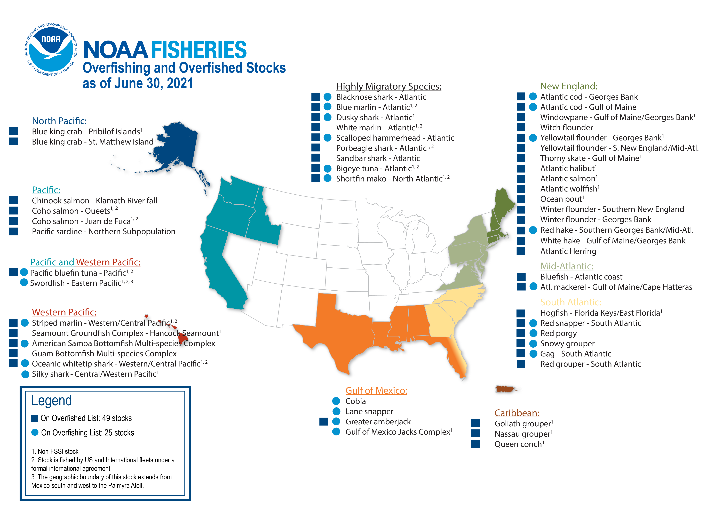

Overfishing
Overfishing is the removal of fish from a body of water at a rate the species cannot replenish. Overfishing leads to bycatch. Bycatch is when other animals get stuck in fishing gear. Turtles, unwanted fish, dolphins, and birds are usually the victims of this. They end up being hauled onto the ships dying, or already dead, and discarded overboard by fishermen. Small changes have been made to fishing gear in the past to prevent this, but the changes often made by fishermen don’t make a huge difference in the problem. If more time and attention was given to creating safer fishing gear, this problem could easily be solved because it is a relatively simple one to fix - especially compared to greater ones like global warming. Overfishing is often caused by poor fishing management - privately, commercially, and through the government. The government could have more rules regulating fishing, commercial and private fishing could follow the rules so that the business is sustainable. Without sustainable fishing, the fish population is decreasing and this will lead to a food crisis because over 3 billion people in the world depend on fish for sustenance. The decline in fish populations will also have a ripple effect on the food chain and the other creatures of the ocean.
